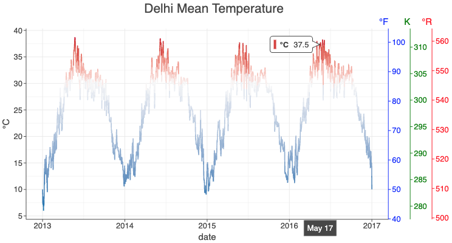
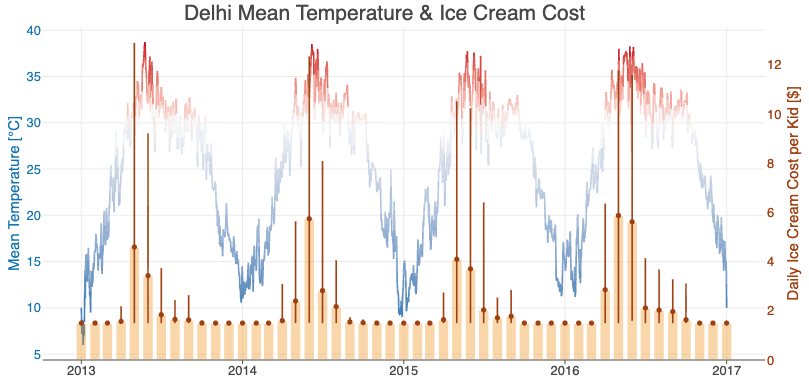
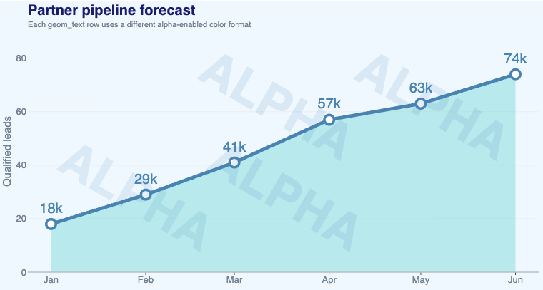
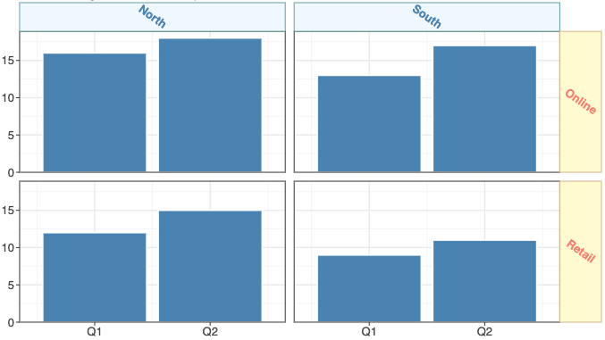

What Is New in 4.14.0
ggdeck()The new
ggdeck()function overlays multiple independent plots in a shared plotting area. Typically, all plots share one axis — enabling dual-axis charts and multivariate comparisons.Dual Axis:

See: example notebook.
Multivariate Comparison:

See example notebook.
Alpha Channel in Color Strings
Named colors accept an opacity suffix after a slash:
"steelblue/0.35".Hex colors accept an alpha channel:
#RRGGBBAAor short form#RGBA.

See: example notebook.
Text Angle in Facet Strip Labels
Facet strip labels can now be rotated via the
angleparameter ofelementText(), applied tostripText,stripTextX, orstripTextY.Thanks to a contribution by tentrillion.

See: example notebook.
And More
See CHANGELOG.md for a full list of changes.
Recent Updates in the Gallery

Changelog
See CHANGELOG.md for other changes and fixes.